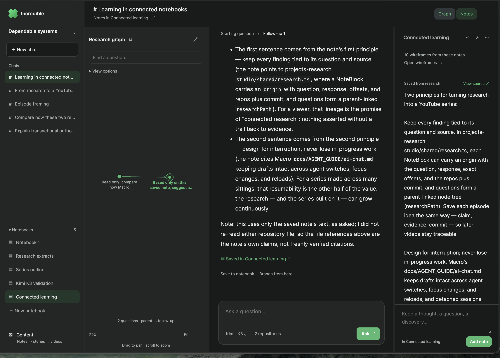
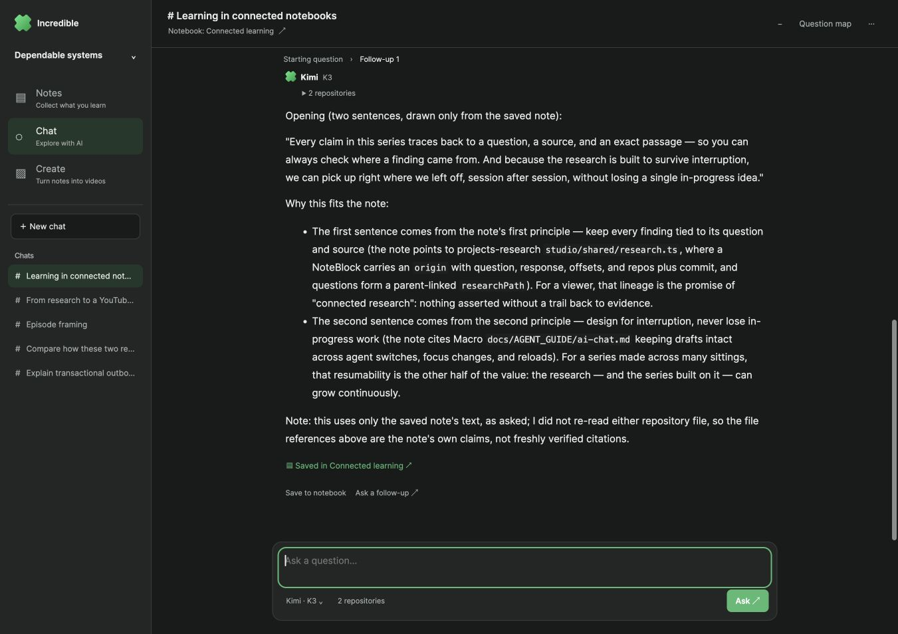
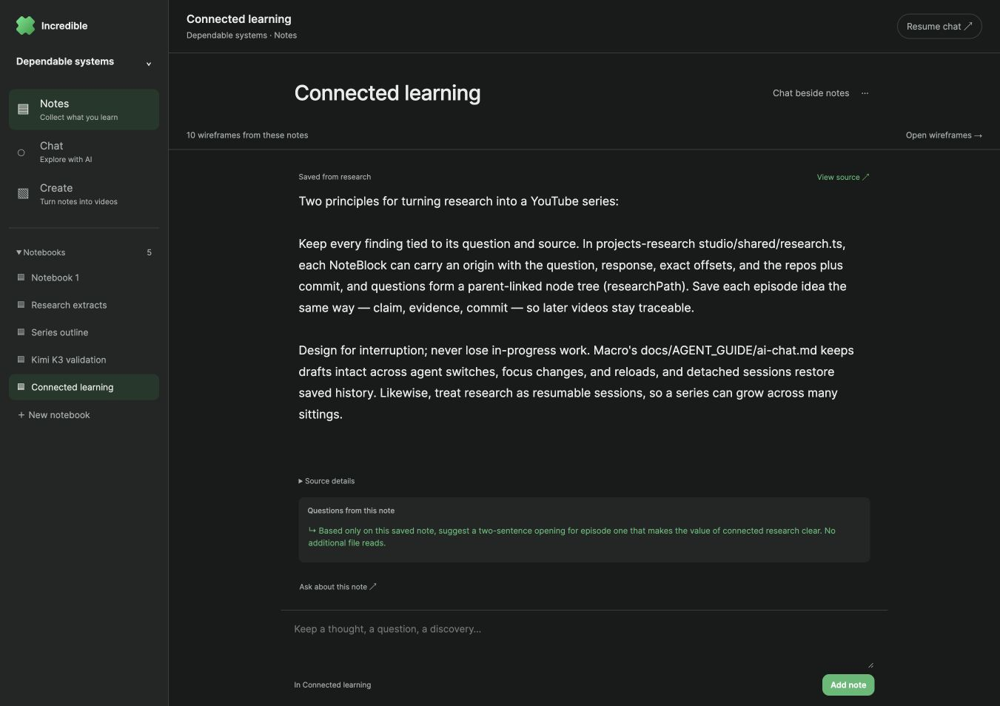
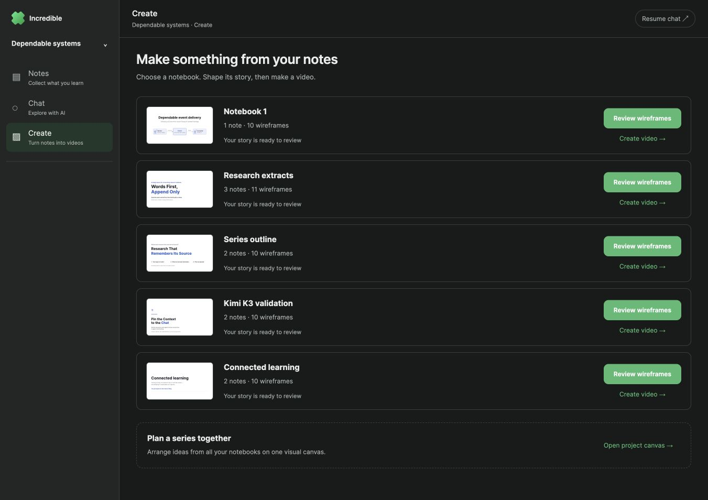
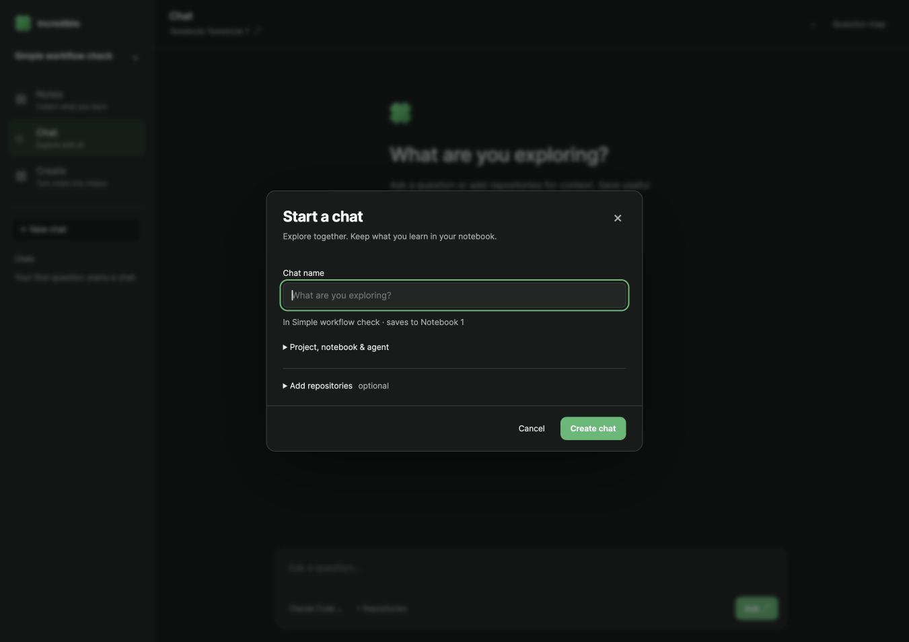
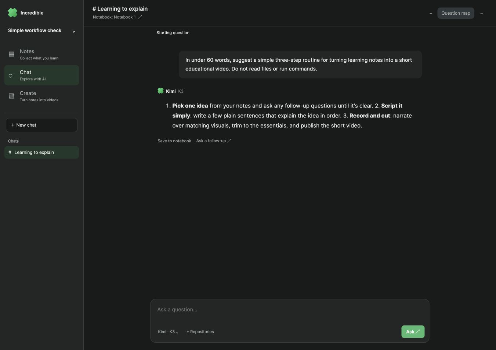
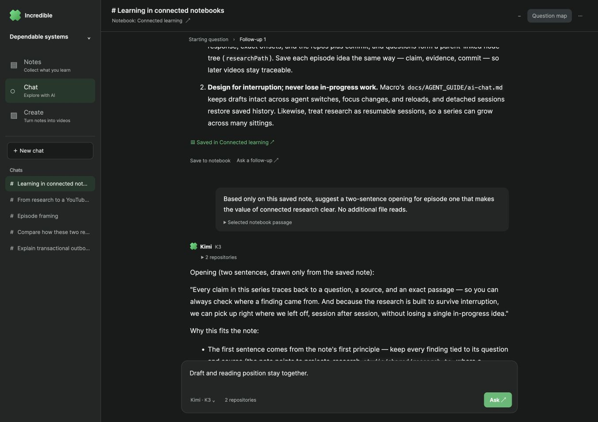
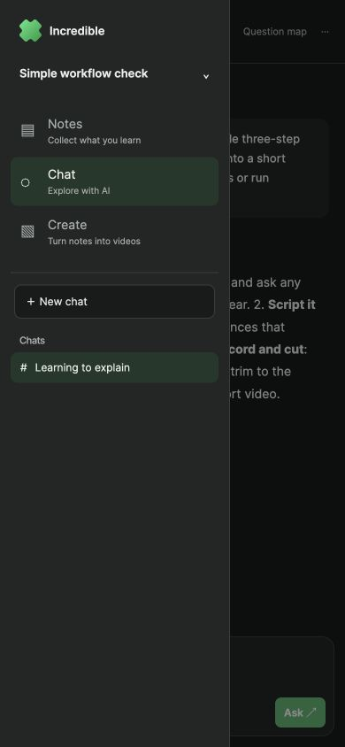
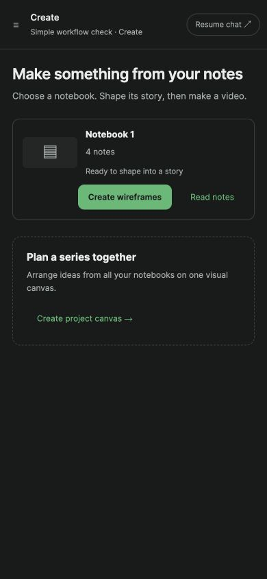

A simpler learning workspace
Visible-browser proof on the parallel 4291/4391 stack, 17 October 2026. The first image is the user’s reported clutter; subsequent images are the implemented product. Numbered HTML overlays annotate original, unmodified screenshots.
The new AI answer used real Kimi K3. Existing wireframes and the shared canvas were opened, not regenerated. No new video was rendered or published in this pass.
The reported problem

123- Chats and notebooks both occupy navigation.
- The question map is open alongside the conversation.
- The full notebook competes for the same attention.
One task at a time

123- Three stable destinations: Notes, Chat, Create. Only the chat list appears here.
- One readable conversation is the default. The graph and notebook stay closed until requested.
- Minimize chat returns to notes. Question map opens the optional supporting panel.
Minimized chat, focused notebook

123- Navigation now lists notebooks instead of mixing notebooks and chats.
- Resume chat restores the conversation and draft.
- Notes remain connected to their source questions and generated wireframes.
One next step for each notebook

123- Each row shows its real note count, generated wireframes and current stage.
- A clear main action leads to the next useful step.
- The shared project canvas remains available for arranging the series.
Chat setup stays small

12- Name the chat. Its current project and notebook are already selected.
- Project, notebook and agent choices are available on demand. Repository and branch setup remains supported.
Real Kimi K3 through the simplified flow

12- A new real kimi-code/k3 answer, submitted in the visible browser.
- The chat kept running while minimized and the user could keep adding notes. The completed answer was saved with its source.
Draft and reading position survive

12- The unsent test draft survived minimize/resume and was cleared after verification.
- The exact transcript position was 345.5 px before and after resuming.
The same choices on a phone

1- The drawer has the same three destinations and only the relevant list.
A clear next step at 390 pixels

12- The notebook has four real saved notes, including the K3 answer. Create wireframes is ready.
- Series planning is secondary and stays within this project.